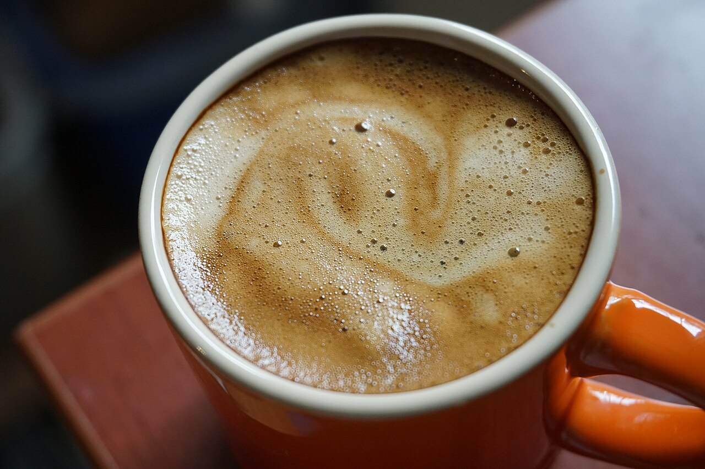

Nish
Cafea specialty pe Str. Horea, în Cluj-Napoca.
5 stele din peste 150 de recenzii.
Scrieți la Nish
Pe Str. Horea
Nish este o locație de cafea specialty în Cluj-Napoca, pe Str. Horea.
Program
Programul nu este confirmat pe această pagină mostră.
Prețurile nu sunt publicate pe această pagină mostră.